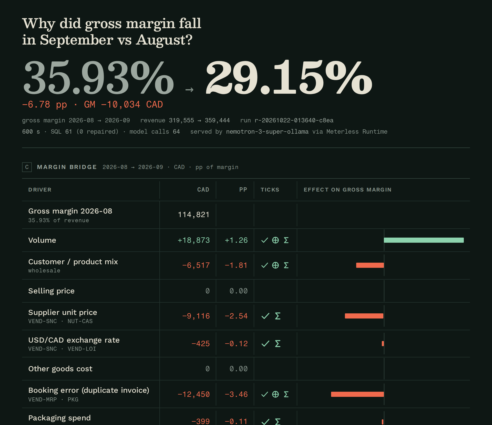
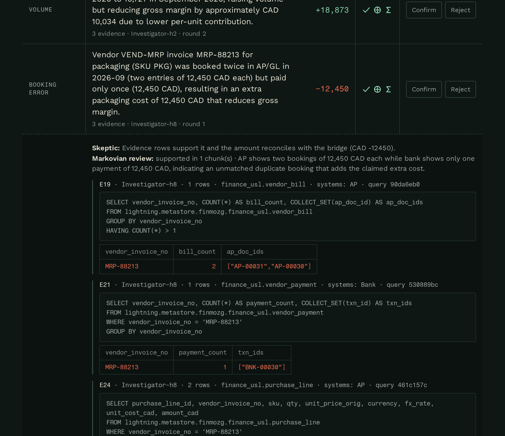

Agents that tell a controller why gross margin moved, and prove every driver with rows from four systems, through Zetaris.
−6.78 pp gross margin, September
Users: the controller or fractional CFO of a 20–200-person company at month-end close, and the owner who reads the memo. Today: 1–2 days of spreadsheet exports per close, and booking errors mistaken for real costs.
A team of agents plans hypotheses, queries all sources through one Zetaris semantic layer, computes an exact margin bridge, and lets a Skeptic veto anything without evidence.
| Driver | CAD | pp | Named by the agents |
|---|---|---|---|
| Booking error | −12,450 | −3.46 | MRP-88213 booked twice, paid once |
| Supplier price | −9,116 | −2.54 | Sierra Nut Co. above contract |
| Customer mix | −6,517 | −1.81 | Capital Wholesale 1,102 → 2,353 units |
| USD/CAD | −425 | −0.12 | measured, immaterial |
| Volume | +18,873 | +1.26 | more units sold |
| Residual | 0 | 0.00 | shown openly |
| Marketing spend rose opex sits below gross margin | |||

